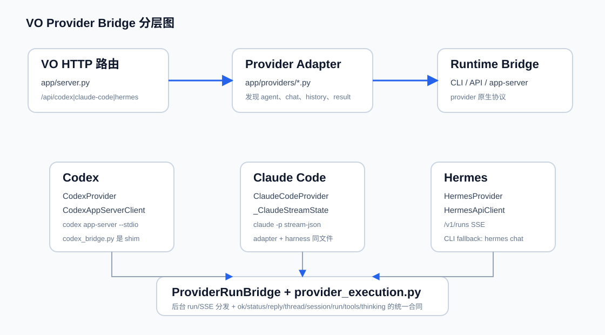

VO 里每个 bridge 到底是什么
Virtual Office 的 bridge 不是单一文件，而是一组边界：HTTP 路由接收 VO 请求，provider adapter 把 VO agent 语义转成 provider 原生命令或 API，runtime bridge 管真实进程或网络协议，ProviderRunBridge 再把后台运行过程变成统一 SSE。
三层地图
当前 VO bridge 可以按职责拆成三层。第一层是 `app/server.py` 的路由和后台 run 包装；第二层是 `app/providers/*.py` 的 provider adapter；第三层是真实 runtime bridge，包括 Codex app-server JSONL、Claude Code CLI stream-json、Hermes HTTP API 或 CLI。`provider_execution.py` 负责把结果合同统一，避免项目执行、会议、聊天各自理解 provider 私有返回。

每个 bridge 的构成
| Bridge | 构成 | 作用 | 主要页面 |
|---|---|---|---|
| Codex app-server bridge | `CodexProvider`、`CodexAppServerClient`、`JsonlAppServerRuntime`、兼容 shim `codex_bridge.py` | 启动或连接 Codex app-server，把 thread/turn、reasoning、tool、approval、fileChange 转成 VO result 和 activity。 | Codex app-server 链路 |
| Codex approval bridge | `APPROVAL_METHODS`、`_handle_server_request`、`respond_approval`、`/api/codex/approval/respond` | 处理 Codex 主动发起的命令、文件、权限、输入请求；无人处理时 fail closed。 | Codex approval 链路 |
| Claude Code harness | `ClaudeCodeProvider`、`_ClaudeStreamState`、`claude -p --output-format stream-json` | 通过 CLI 输出流聚合 reply、tool、usage、session，并用 ProviderRunBridge 统一 SSE。 | Claude Code 链路 |
| Hermes bridge | `HermesProvider`、`HermesApiClient`、Hermes CLI fallback | 优先调用 Hermes native API run/SSE/approval/stop；不可用时走 CLI chat。 | Hermes 链路 |
| ProviderRunBridge | `ProviderRunBridge.remember/update/emit/stream_events` | 保存 runId、事件队列和 terminal result，为 Codex/Claude/Hermes 输出统一 SSE。 | Run/SSE 总线 |
核心 Happy Path
服务器校验 message、agent、conversationId，生成 VO 层 `runId` 和 queue。
`remember(meta)` 保存 run 元信息，worker thread 异步执行 provider chat。
Codex 进入 app-server JSONL；Claude Code 启动 CLI stream-json；Hermes 走 native API 或 CLI fallback。
不同 provider 的 activity、snapshot、native event 被转成 `message.delta`、`reasoning.available`、`tool.*`、`approval.request`。
`/api/{provider}/runs/{runId}/events` 由 `stream_events` 输出 event-stream，terminal event 后清理。
`normalize_provider_result` 输出 `ok/status/reply/threadId/sessionId/runId/tools/thinking/tokenUsage/modifiedFiles`。
质量闸门与风险边界
本教程的代码结论来自当前源码、测试和 Git 历史；验证 Subagent 已跑通最小回归测试。但没有验证真实 Codex/Claude/Hermes 登录环境，也没有跑浏览器 EventSource 端到端渲染。`app/server.py` 存在重复 handler 定义和较大的历史堆叠，页面中涉及历史原因的表述只采用 commit/diff 可验证内容。
关键概念补充
VO 与 provider 原生 runtime 之间的适配层，负责 agent、profile、history、chat 和 result contract。
真正和外部进程或 API 对话的层，例如 `codex app-server --stdio` 或 `claude -p`。
后台 run registry 和 SSE queue，不负责执行 provider，只负责保存和分发事件。